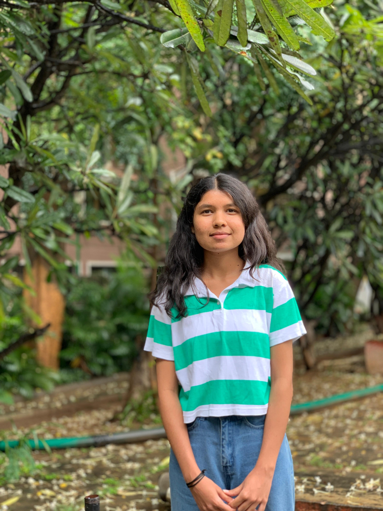

Basic Information
Name: Pragati Neraki
Address: AECS Layout, Kundalahalli, Bangalore, 580037
Email ID: prne22cs@cmrit.ac.in
Mobile Number: +91-7411686638
LinkedIn: linkedin.com/in/johndoe
GitHub: github.com/johndoe
Career Objectives
- I aim to secure a Software Engineer position at XYZ Corp to apply my technical and problem-solving skills.
- I bring innovative solutions, teamwork, and dedication to contribute to the company's growth.
- In return, I seek professional growth opportunities and a collaborative work environment.
Education Qualification
- Bachelor's Degree in Computer Science - CMR Institute Of Technology (2022-2026)
- PUC - Vagdevi PU Science College, Bagalkote (2020 - 2022)
- High School - S J G International Public School (2018-2020)
Technical Skills
- Programming Languages: Python, Java, C++
- Web Development: HTML, CSS, JavaScript, React
- Database Management: MySQL, MongoDB
- Version Control: Git, GitHub
Projects
- Library Management System: Built a web-based application using React and Firebase for managing library operations.
- Weather App: Developed a real-time weather forecasting app using JavaScript and OpenWeatherMap API.
Internships
- Software Development Intern at ABC Corp: Worked on creating RESTful APIs for e-commerce applications.
- Web Development Intern at Tech Solutions: Developed and deployed responsive websites for clients.
Co-Curricular and Extracurricular Activities
- Participated in National Level Hackathons.
- Volunteered as a Teaching Assistant for coding workshops.
- Member of the University's Sports Team (Football).
Technical Clubs
- Member of the Coding Club at XYZ University.
- Organized coding contests and workshops as part of the AI Club.
Non-Technical Clubs
- Member of the Drama Club - participated in intercollegiate competitions.
- Active participant in the Photography Club.
Achievements
- Secured 1st place in the National Coding Competition (2023).
- Awarded 'Best Intern' at ABC Corp.
- Won multiple prizes in sports tournaments.
Personal Details
Date of Birth: August 18, 2004
Gender: Female
Languages Known: English, Hindi, Kannada
Hobbies: Coding, Reading, Travelling